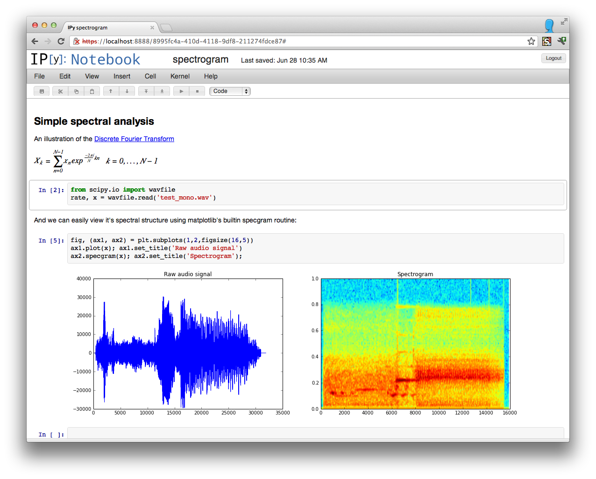
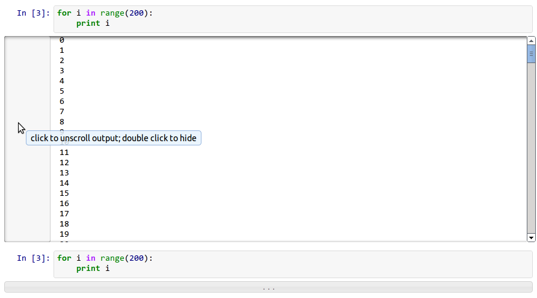
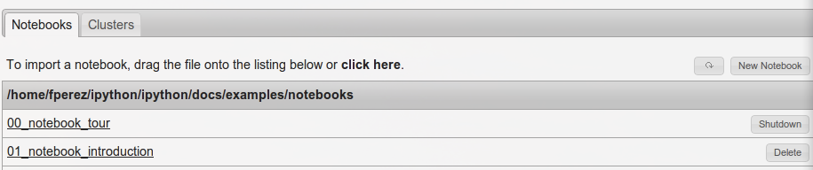
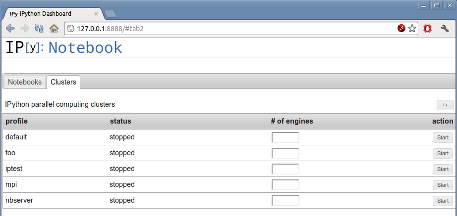
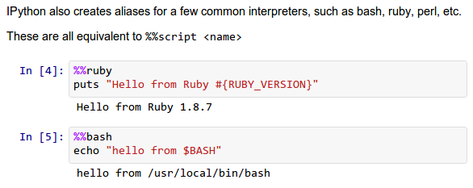
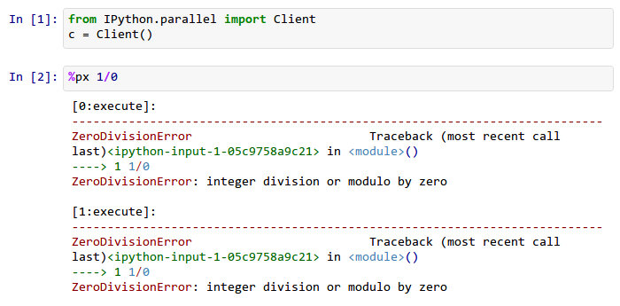
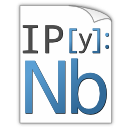

Note
This documentation is for a development version of IPython. There may be significant differences from the latest stable release.
0.13 Series¶
Release 0.13¶
IPython 0.13 contains several major new features, as well as a large amount of bug and regression fixes. The previous version (0.12) was released on December 19 2011, and in this development cycle we had:
- ~6 months of work.
- 373 pull requests merged.
- 742 issues closed (non-pull requests).
- contributions from 62 authors.
- 1760 commits.
- a diff of 114226 lines.
The amount of work included in this release is so large, that we can only cover here the main highlights; please see our detailed release statistics for links to every issue and pull request closed on GitHub as well as a full list of individual contributors.
Major Notebook improvements: new user interface and more¶
The IPython Notebook, which has proven since its release to be wildly popular, has seen a massive amount of work in this release cycle, leading to a significantly improved user experience as well as many new features.
The first user-visible change is a reorganization of the user interface; the left panel has been removed and was replaced by a real menu system and a toolbar with icons. Both the toolbar and the header above the menu can be collapsed to leave an unobstructed working area:
{kind=link}
The notebook handles very long outputs much better than before (this was a serious usability issue when running processes that generated massive amounts of output). Now, in the presence of outputs longer than ~100 lines, the notebook will automatically collapse to a scrollable area and the entire left part of this area controls the display: one click in this area will expand the output region completely, and a double-click will hide it completely. This figure shows both the scrolled and hidden modes:
{kind=link}
Note
The auto-folding of long outputs is disabled in Firefox due to bugs in its scrolling behavior. See PR #2047 for details.
Uploading notebooks to the dashboard is now easier: in addition to drag and drop (which can be finicky sometimes), you can now click on the upload text and use a regular file dialog box to select notebooks to upload. Furthermore, the notebook dashboard now auto-refreshes its contents and offers buttons to shut down any running kernels (PR #1739):
{kind=link}
Cluster management¶
The notebook dashboard can now also start and stop clusters, thanks to a new tab in the dashboard user interface:
{kind=link}
This interface allows, for each profile you have configured, to start and stop a cluster (and optionally override the default number of engines corresponding to that configuration). While this hides all error reporting, once you have a configuration that you know works smoothly, it is a very convenient interface for controlling your parallel resources.
New notebook format¶
The notebooks saved now use version 3 of our format, which supports heading levels as well as the concept of ‘raw’ text cells that are not rendered as Markdown. These will be useful with converters we are developing, to pass raw markup (say LaTeX). That conversion code is still under heavy development and not quite ready for prime time, but we welcome help on this front so that we can merge it for full production use as soon as possible.
Note
v3 notebooks can not be read by older versions of IPython, but we provide a simple script that you can use in case you need to export a v3 notebook to share with a v2 user.
JavaScript refactoring¶
All the client-side JavaScript has been decoupled to ease reuse of parts of the machinery without having to build a full-blown notebook. This will make it much easier to communicate with an IPython kernel from existing web pages and to integrate single cells into other sites, without loading the full notebook document-like UI. PR #1711.
This refactoring also enables the possibility of writing dynamic javascript widgets that are returned from Python code and that present an interactive view to the user, with callbacks in Javascript executing calls to the Kernel. This will enable many interactive elements to be added by users in notebooks.
An example of this capability has been provided as a proof of concept in examples/widgets that lets you directly communicate with one or more parallel engines, acting as a mini-console for parallel debugging and introspection.
Improved tooltips¶
The object tooltips have gained some new functionality. By pressing tab several times, you can expand them to see more of a docstring, keep them visible as you fill in a function’s parameters, or transfer the information to the pager at the bottom of the screen. For the details, look at the example notebook 01_notebook_introduction.ipynb.
{kind=link}
The new notebook tooltips.
Other improvements to the Notebook¶
These are some other notable small improvements to the notebook, in addition to many bug fixes and minor changes to add polish and robustness throughout:
- The notebook pager (the area at the bottom) is now resizeable by dragging its divider handle, a feature that had been requested many times by just about anyone who had used the notebook system. PR #1705.
- It is now possible to open notebooks directly from the command line; for example: ipython notebook path/ will automatically set path/ as the notebook directory, and ipython notebook path/foo.ipynb will further start with the foo.ipynb notebook opened. PR #1686.
- If a notebook directory is specified with --notebook-dir (or with the corresponding configuration flag NotebookManager.notebook_dir), all kernels start in this directory.
- Fix codemirror clearing of cells with Ctrl-Z; PR #1965.
- Text (markdown) cells now line wrap correctly in the notebook, making them much easier to edit PR #1330.
- PNG and JPEG figures returned from plots can be interactively resized in the notebook, by dragging them from their lower left corner. PR #1832.
- Clear In [] prompt numbers on “Clear All Output”. For more version-control-friendly .ipynb files, we now strip all prompt numbers when doing a “Clear all output”. This reduces the amount of noise in commit-to-commit diffs that would otherwise show the (highly variable) prompt number changes. PR #1621.
- The notebook server now requires two consecutive Ctrl-C within 5 seconds (or an interactive confirmation) to terminate operation. This makes it less likely that you will accidentally kill a long-running server by typing Ctrl-C in the wrong terminal. PR #1609.
- Using Ctrl-S (or Cmd-S on a Mac) actually saves the notebook rather than providing the fairly useless browser html save dialog. PR #1334.
- Allow accessing local files from the notebook (in urls), by serving any local file as the url files/<relativepath>. This makes it possible to, for example, embed local images in a notebook. PR #1211.
Cell magics¶
We have completely refactored the magic system, finally moving the magic objects to standalone, independent objects instead of being the mixin class we’d had since the beginning of IPython (PR #1732). Now, a separate base class is provided in IPython.core.magic.Magics that users can subclass to create their own magics. Decorators are also provided to create magics from simple functions without the need for object orientation. Please see the Magic command system docs for further details.
All builtin magics now exist in a few subclasses that group together related functionality, and the new IPython.core.magics package has been created to organize this into smaller files.
This cleanup was the last major piece of deep refactoring needed from the original 2001 codebase.
We have also introduced a new type of magic function, prefixed with %% instead of %, which operates at the whole-cell level. A cell magic receives two arguments: the line it is called on (like a line magic) and the body of the cell below it.
Cell magics are most natural in the notebook, but they also work in the terminal and qt console, with the usual approach of using a blank line to signal cell termination.
For example, to time the execution of several statements:
%%timeit x = 0 # setup
for i in range(100000):
x += i**2
This is particularly useful to integrate code in another language, and cell magics already exist for shell scripts, Cython, R and Octave. Using %%script /usr/bin/foo, you can run a cell in any interpreter that accepts code via stdin.
Another handy cell magic makes it easy to write short text files: %%file ~/save/to/here.txt.
The following cell magics are now included by default; all those that use special interpreters (Perl, Ruby, bash, etc.) assume you have the requisite interpreter installed:
- %%!: run cell body with the underlying OS shell; this is similar to prefixing every line in the cell with !.
- %%bash: run cell body under bash.
- %%capture: capture the output of the code in the cell (and stderr as well). Useful to run codes that produce too much output that you don’t even want scrolled.
- %%file: save cell body as a file.
- %%perl: run cell body using Perl.
- %%prun: run cell body with profiler (cell extension of %prun).
- %%python3: run cell body using Python 3.
- %%ruby: run cell body using Ruby.
- %%script: run cell body with the script specified in the first line.
- %%sh: run cell body using sh.
- %%sx: run cell with system shell and capture process output (cell extension of %sx).
- %%system: run cell with system shell (%%! is an alias to this).
- %%timeit: time the execution of the cell (extension of %timeit).
This is what some of the script-related magics look like in action:
{kind=link}
In addition, we have also a number of extensions that provide specialized magics. These typically require additional software to run and must be manually loaded via %load_ext <extension name>, but are extremely useful. The following extensions are provided:
- Cython magics (extension cythonmagic)
- This extension provides magics to automatically build and compile Python extension modules using the Cython language. You must install Cython separately, as well as a C compiler, for this to work. The examples directory in the source distribution ships with a full notebook demonstrating these capabilities:
{kind=link}
- Octave magics (extension octavemagic)
- This extension provides several magics that support calling code written in the Octave language for numerical computing. You can execute single-lines or whole blocks of Octave code, capture both output and figures inline (just like matplotlib plots), and have variables automatically converted between the two languages. To use this extension, you must have Octave installed as well as the oct2py package. The examples directory in the source distribution ships with a full notebook demonstrating these capabilities:
{kind=link}
- R magics (extension rmagic)
- This extension provides several magics that support calling code written in the R language for statistical data analysis. You can execute single-lines or whole blocks of R code, capture both output and figures inline (just like matplotlib plots), and have variables automatically converted between the two languages. To use this extension, you must have R installed as well as the rpy2 package that bridges Python and R. The examples directory in the source distribution ships with a full notebook demonstrating these capabilities:
{kind=link}
Tab completer improvements¶
Useful tab-completion based on live inspection of objects is one of the most popular features of IPython. To make this process even more user-friendly, the completers of both the Qt console and the Notebook have been reworked.
The Qt console comes with a new ncurses-like tab completer, activated by default, which lets you cycle through the available completions by pressing tab, or select a completion with the arrow keys (PR #1851).
{kind=link}
The new improved Qt console’s ncurses-like completer allows to easily navigate thought long list of completions.
In the notebook, completions are now sourced both from object introspection and analysis of surrounding code, so limited completions can be offered for variables defined in the current cell, or while the kernel is busy (PR #1711).
We have implemented a new configurable flag to control tab completion on modules that provide the __all__ attribute:
IPCompleter.limit_to__all__= Boolean
This instructs the completer to honor __all__ for the completion. Specifically, when completing on object.<tab>, if True: only those names in obj.__all__ will be included. When False [default]: the __all__ attribute is ignored. PR #1529.
Improvements to the Qt console¶
The Qt console continues to receive improvements and refinements, despite the fact that it is by now a fairly mature and robust component. Lots of small polish has gone into it, here are a few highlights:
- A number of changes were made to the underlying code for easier integration into other projects such as Spyder (PR #2007, PR #2024).
- Improved menus with a new Magic menu that is organized by magic groups (this was made possible by the reorganization of the magic system internals). PR #1782.
- Allow for restarting kernels without clearing the qtconsole, while leaving a visible indication that the kernel has restarted. PR #1681.
- Allow the native display of jpeg images in the qtconsole. PR #1643.
Parallel¶
The parallel tools have been improved and fine-tuned on multiple fronts. Now, the creation of an IPython.parallel.Client object automatically activates a line and cell magic function px that sends its code to all the engines. Further magics can be easily created with the Client.activate() method, to conveniently execute code on any subset of engines. PR #1893.
The %%px cell magic can also be given an optional targets argument, as well as a --out argument for storing its output.
A new magic has also been added, %pxconfig, that lets you configure various defaults of the parallel magics. As usual, type %pxconfig? for details.
The exception reporting in parallel contexts has been improved to be easier to read. Now, IPython directly reports the remote exceptions without showing any of the internal execution parts:
{kind=link}
The parallel tools now default to using NoDB as the storage backend for intermediate results. This means that the default usage case will have a significantly reduced memory footprint, though certain advanced features are not available with this backend. For more details, see IPython’s Task Database.
The parallel magics now display all output, so you can do parallel plotting or other actions with complex display. The px magic has now both line and cell modes, and in cell mode finer control has been added about how to collate output from multiple engines. PR #1768.
There have also been incremental improvements to the SSH launchers:
- add to_send/fetch steps for moving connection files around.
- add SSHProxyEngineSetLauncher, for invoking to ipcluster engines on a remote host. This can be used to start a set of engines via PBS/SGE/MPI remotely.
This makes the SSHLauncher usable on machines without shared filesystems.
A number of ‘sugar’ methods/properties were added to AsyncResult that are quite useful (PR #1548) for everday work:
- ar.wall_time = received - submitted
- ar.serial_time = sum of serial computation time
- ar.elapsed = time since submission (wall_time if done)
- ar.progress = (int) number of sub-tasks that have completed
- len(ar) = # of tasks
- ar.wait_interactive(): prints progress
Added Client.spin_thread() / stop_spin_thread() for running spin in a background thread, to keep zmq queue clear. This can be used to ensure that timing information is as accurate as possible (at the cost of having a background thread active).
Set TaskScheduler.hwm default to 1 instead of 0. 1 has more predictable/intuitive behavior, if often slower, and thus a more logical default. Users whose workloads require maximum throughput and are largely homogeneous in time per task can make the optimization themselves, but now the behavior will be less surprising to new users. PR #1294.
Kernel/Engine unification¶
This is mostly work ‘under the hood’, but it is actually a major achievement for the project that has deep implications in the long term: at last, we have unified the main object that executes as the user’s interactive shell (which we refer to as the IPython kernel) with the objects that run in all the worker nodes of the parallel computing facilities (the IPython engines). Ever since the first implementation of IPython’s parallel code back in 2006, we had wanted to have these two roles be played by the same machinery, but a number of technical reasons had prevented that from being true.
In this release we have now merged them, and this has a number of important consequences:
It is now possible to connect any of our clients (qtconsole or terminal console) to any individual parallel engine, with the exact behavior of working at a ‘regular’ IPython console/qtconsole. This makes debugging, plotting, etc. in parallel scenarios vastly easier.
Parallel engines can always execute arbitrary ‘IPython code’, that is, code that has magics, shell extensions, etc. In combination with the %%px magics, it is thus extremely natural for example to send to all engines a block of Cython or R code to be executed via the new Cython and R magics. For example, this snippet would send the R block to all active engines in a cluster:
%%px %%R ... R code goes here
It is possible to embed not only an interactive shell with the IPython.embed() call as always, but now you can also embed a kernel with IPython.embed_kernel(). Embedding an IPython kernel in an application is useful when you want to use IPython.embed() but don’t have a terminal attached on stdin and stdout.
The new IPython.parallel.bind_kernel() allows you to promote Engines to listening Kernels, and connect QtConsoles to an Engine and debug it directly.
In addition, having a single core object through our entire architecture also makes the project conceptually cleaner, easier to maintain and more robust. This took a lot of work to get in place, but we are thrilled to have this major piece of architecture finally where we’d always wanted it to be.
Official Public API¶
We have begun organizing our API for easier public use, with an eye towards an official IPython 1.0 release which will firmly maintain this API compatible for its entire lifecycle. There is now an IPython.display module that aggregates all display routines, and the IPython.config namespace has all public configuration tools. We will continue improving our public API layout so that users only need to import names one level deeper than the main IPython package to access all public namespaces.
IPython notebook file icons¶
The directory docs/resources in the source distribution contains SVG and PNG versions of our file icons, as well as an Info.plist.example file with instructions to install them on Mac OSX. This is a first draft of our icons, and we encourage contributions from users with graphic talent to improve them in the future:
New top-level locate command¶
Add locate entry points; these would be useful for quickly locating IPython directories and profiles from other (non-Python) applications. PR #1762.
Examples:
$> ipython locate
/Users/me/.ipython
$> ipython locate profile foo
/Users/me/.ipython/profile_foo
$> ipython locate profile
/Users/me/.ipython/profile_default
$> ipython locate profile dne
[ProfileLocate] Profile u'dne' not found.
Other new features and improvements¶
- %install_ext: A new magic function to install an IPython extension from a URL. E.g. %install_ext https://bitbucket.org/birkenfeld/ipython-physics/raw/default/physics.py.
- The %loadpy magic is no longer restricted to Python files, and has been renamed %load. The old name remains as an alias.
- New command line arguments will help external programs find IPython folders: ipython locate finds the user’s IPython directory, and ipython locate profile foo finds the folder for the ‘foo’ profile (if it exists).
- The IPYTHON_DIR environment variable, introduced in the Great Reorganization of 0.11 and existing only in versions 0.11-0.13, has been deprecated. As described in PR #1167, the complexity and confusion of migrating to this variable is not worth the aesthetic improvement. Please use the historical IPYTHONDIR environment variable instead.
- The default value of interactivity passed from run_cell() to run_ast_nodes() is now configurable.
- New %alias_magic function to conveniently create aliases of existing magics, if you prefer to have shorter names for personal use.
- We ship unminified versions of the JavaScript libraries we use, to better comply with Debian’s packaging policies.
- Simplify the information presented by obj?/obj?? to eliminate a few redundant fields when possible. PR #2038.
- Improved continuous integration for IPython. We now have automated test runs on Shining Panda and Travis-CI, as well as Tox support.
- The vim-ipython functionality (externally developed) has been updated to the latest version.
The %save magic now has a -f flag to force overwriting, which makes it much more usable in the notebook where it is not possible to reply to interactive questions from the kernel. PR #1937.
Use dvipng to format sympy.Matrix, enabling display of matrices in the Qt console with the sympy printing extension. PR #1861.
Our messaging protocol now has a reasonable test suite, helping ensure that we don’t accidentally deviate from the spec and possibly break third-party applications that may have been using it. We encourage users to contribute more stringent tests to this part of the test suite. PR #1627.
Use LaTeX to display, on output, various built-in types with the SymPy printing extension. PR #1399.
Add Gtk3 event loop integration and example. PR #1588.
clear_output improvements, which allow things like progress bars and other simple animations to work well in the notebook (PR #1563):
- clear_output() clears the line, even in terminal IPython, the QtConsole and plain Python as well, by printing r to streams.
- clear_output() avoids the flicker in the notebook by adding a delay, and firing immediately upon the next actual display message.
- display_javascript hides its output_area element, so using display to run a bunch of javascript doesn’t result in ever-growing vertical space.
Add simple support for running inside a virtualenv. While this doesn’t supplant proper installation (as users should do), it helps ad-hoc calling of IPython from inside a virtualenv. PR #1388.
Major Bugs fixed¶
In this cycle, we have closed over 740 issues, but a few major ones merit special mention:
- The %pastebin magic has been updated to point to gist.github.com, since unfortunately http://paste.pocoo.org has closed down. We also added a -d flag for the user to provide a gist description string. PR #1670.
- Fix %paste that would reject certain valid inputs. PR #1258.
- Fix sending and receiving of Numpy structured arrays (those with composite dtypes, often used as recarrays). PR #2034.
- Reconnect when the websocket connection closes unexpectedly. PR #1577.
- Fix truncated representation of objects in the debugger by showing at least 80 characters’ worth of information. PR #1793.
- Fix logger to be Unicode-aware: logging could crash ipython if there was unicode in the input. PR #1792.
- Fix images missing from XML/SVG export in the Qt console. PR #1449.
- Fix deepreload on Python 3. PR #1625, as well as having a much cleaner and more robust implementation of deepreload in general. PR #1457.
Backwards incompatible changes¶
- The exception IPython.core.error.TryNext previously accepted arguments and keyword arguments to be passed to the next implementation of the hook. This feature was removed as it made error message propagation difficult and violated the principle of loose coupling.